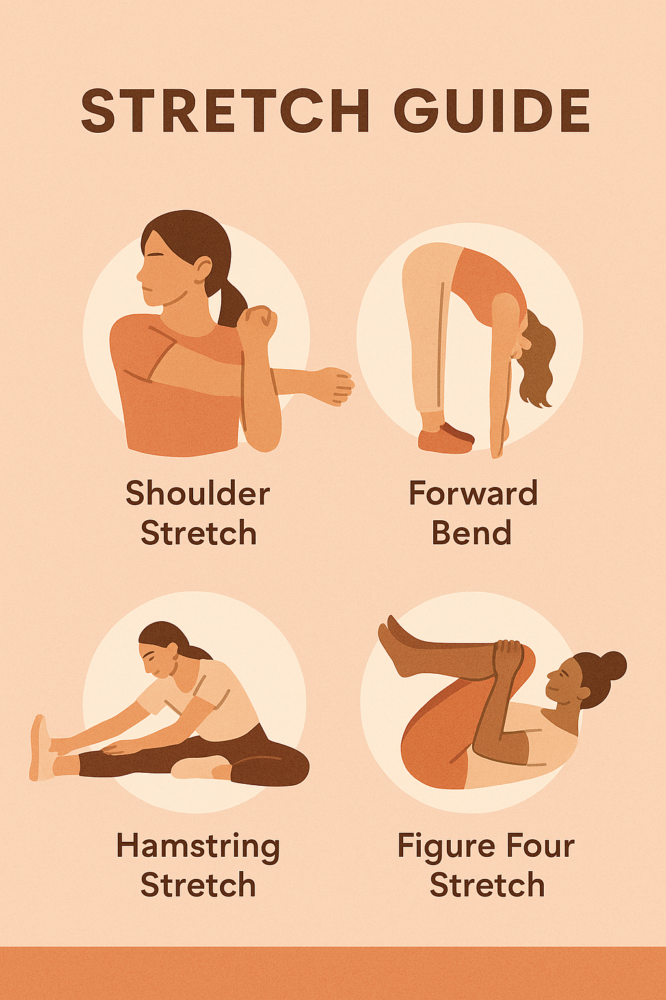

Explore practical exercises and ergonomic tips you can use at home or work to improve posture, flexibility, and comfort throughout your day.
Daily Stretch Guide
Incorporate these simple stretches to ease tension and maintain mobility.
Image source: Created with DALL·E 3 (2025).
Proper Posture at Your Desk
Sit with both feet flat, shoulders relaxed, and your monitor at eye level. Take movement breaks every 30 minutes.

Image source: Created with DALL·E 3 (2025).